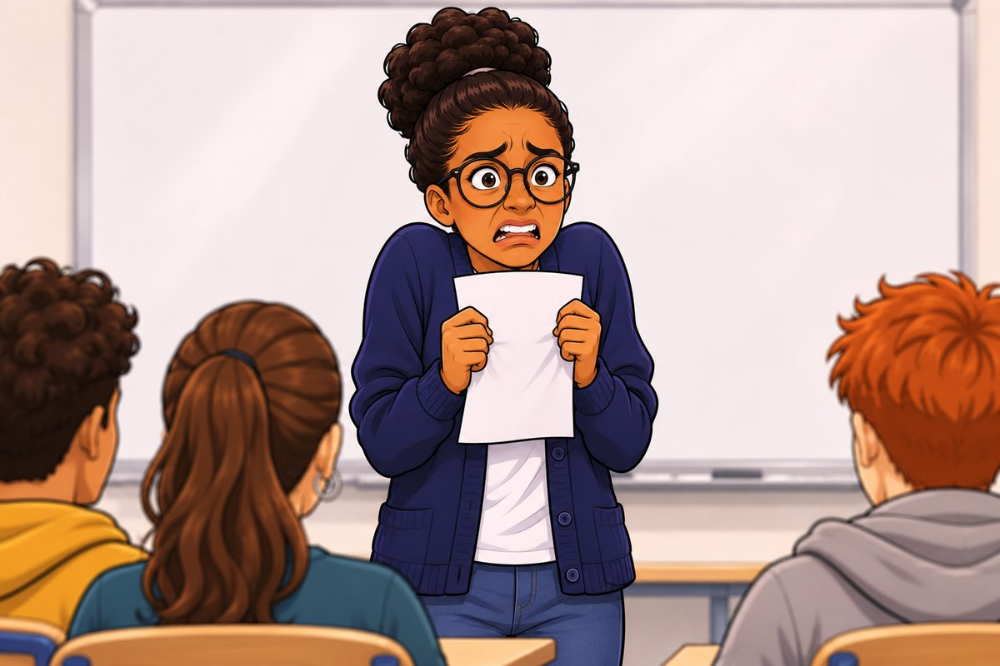

Le jury des stratégies
Observe cinq dossiers illustrés. Pour chacun, dis ce que la personne ressent, le besoin touché, ce qu'elle peut faire, puis vérifie l'effet.
Corps et émotion
Force de l'émotion
Besoin
Message-je
Stress
Dossier 1 sur 5
Score 0 / 20